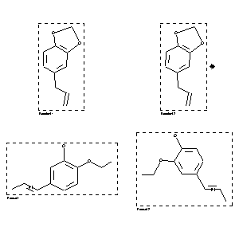

|  |
| FA | RX(1); FLST(1); RX(1) |
Reaction (1 of 1)
| Reaction ID | 132192 |
| Reactant BRN | 136380 |
| Reactant | 5-allyl-benzo[1,3]dioxole |
| Product BRN | 2259898; 3200087 |
| Product | 2-ethoxy-5-trans-propenyl-phenol; 2-ethoxy-4-trans-propenyl-phenol |
| No. of Reaction Details | 1 |
Reaction Details (1 of 1)
| Reaction Classification | Preparation |
| Reagent | methanol. KOH |
| Temperature | 130 - 140 |
| Other Conditions | anschliessendes Behandeln mit Aethylbromid und aethanol. KOH bei 100grad und Kochen des Reaktionsprodukts mit wss.-aethanol. HCl |
| Comment | Handbook |
| Citation Pointer | 1587167; Patent; Riedel-de Haen; DE 562007; 1927; FTFVA6; Fortschr.Teerfarbenfabr.Verw.Industriezweige; DE; GE; 19; 754; |
Reference (1 of 1)
| Citation Number | 1587167 |
| Document Type | Patent |
| Patent Author | Riedel-de Haen |
| Patent Number | DE 562007 |
| Patent Year | 1927 |
| CODEN | FTFVA6 |
| Journal Title | Fortschr.Teerfarbenfabr.Verw.Industriezweige |
| Country Code | DE |
| Language Code | GE |
| (Series) Volume | 19 |
| Page | 754 |